熊猫五福餐厅 · 管理后台
把供应商的送货单
变成一张结算单
入库单导入 → 生成结算单 · 带截图的操作教程
不用打字录原料，不用算金额。把供应商发来的 Excel 或送货单文件导进系统，
系统自动生成「进货单」，再一键打出「结算单」交给老板签字、财务付款。
本教程每一步都有截图，红框和数字就是你要点的地方，照着做就行。
目录
开始前先认三个按钮（窗口右上角）
第 1 步打开程序，登录
第 2 步左边菜单：进销存 → 入库单
第 3 步认一下这个页面
第 4 步点「批量导入」，打开导入窗口
第 5 步选文件 → 看预览（最关键）
第 6 步点「确认导入 1 张」
第 7 步点「确认入库」（货已到就点）
第 8 步认一下导入后的那一行
第 9 步点「结算单」
第 10 步导出 PDF，发给老板
成品结算单长这样
其他 ①一次给多张单据出结算单
其他 ②.xls 文件不支持怎么办
其他 ③报错「未识别到表头」
其他 ④把品名/数量/单价指到列上
排查新手最容易卡住的 9 件事
核对做完对照这张清单
开始前：先认三个按钮
程序窗口的右上角有三个小图标。找不到「最小化」就是因为它躲在这里（窗口最大化时在最右上角，不在标题文字旁边）。
— 最小化：收进屏幕最下面的任务栏，程序还在。想先干别的就点它。
□ 最大化 / 还原：把窗口放大或变回原来大小。
× 关闭：退出程序（后台服务也会停）。不要随手点这个。
还有一条最省事的退路：不管点到哪儿、弹窗关不掉，按一下键盘左上角的 Esc 键，弹窗就会关上，页面上已导入的数据不会丢。
第 1 步
打开程序，登录
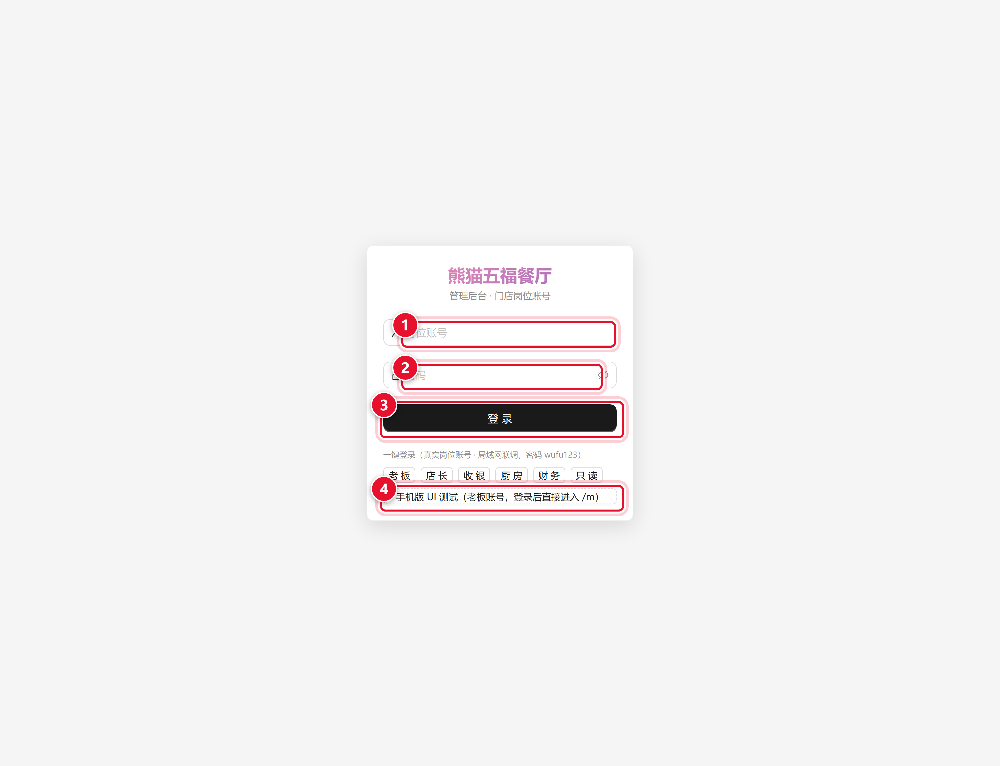
双击桌面上的「熊猫五福餐厅管理后台」图标后出现的登录页（可能先黑屏几秒，属正常）
- 1 账号框（有人形图标）：输入
boss（全小写）。
- 2 密码框（有锁图标）：输入
wufu123。
- 3 点蓝色「登 录」按钮。
- 4 更省事的办法：直接点下面的「老板」小按钮，不用输账号密码。
你会看到：屏幕上方闪过绿色「登录成功 · ……」，页面跳到首页，左边出现一竖排菜单。
卡住了？提示「登录失败」：检查账号是不是全小写、密码里的 123 是数字；键盘 CapsLock 灯亮着就按一下关掉。窗口一直不出现：看屏幕最下面任务栏有没有程序图标，点一下。
第 2 步
左边菜单：进销存 → 入库单
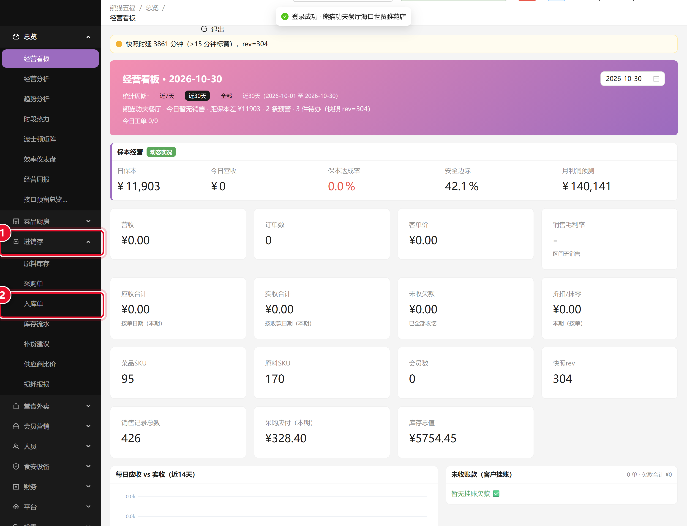
屏幕左边这一竖排就是菜单，所有功能都在这里找
- 1 点「进销存」（图标像个小方盒），它下面会展开 7 个子项。
- 2 再点「入库单」。
你会看到：页面变成「进货入库（JH 进货单）」，最上面 4 个金额卡片，下面一张大表格。
卡住了？左边没有「进销存」：说明登录的不是老板/店长，重新登录换「老板」。菜单太长看不全：用鼠标滚轮在菜单上滚一下。
第 3 步
认一下这个页面
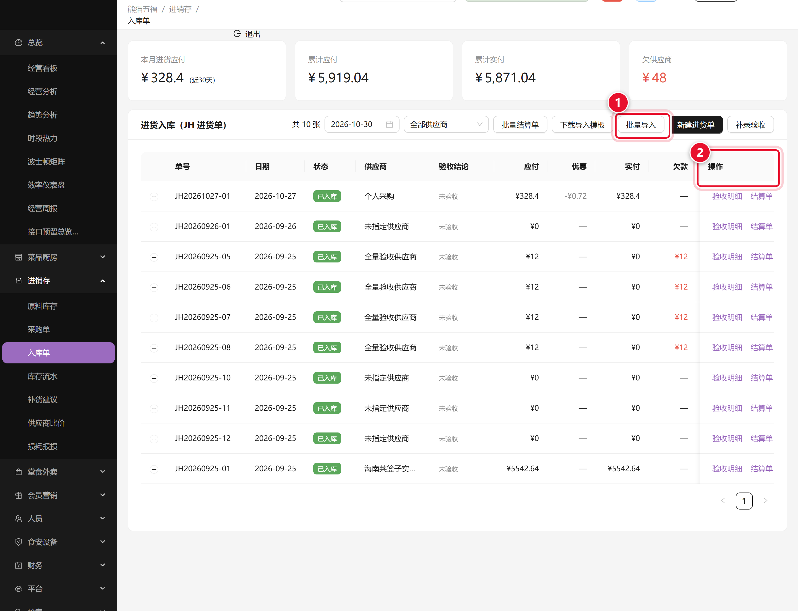
以后每次导入都从这里开始
- 1 右上角这排按钮里点「批量导入」——本教程只用这一个。
- 2 表格最右边这一列叫「操作」，每张单据的「结算单」按钮都在这一列里（第 8 步要用）。
你会看到：表格里已有的旧单据，一张一行；最上面 4 个卡片是累计金额。
卡住了？「批量导入」是灰的、点不动：① 账号不是老板/店长；② 页面最上面有黄色「Mock」提示条，说明后台没连上——把程序窗口关掉重新双击图标。右侧按钮被挡住：把窗口拉宽，或按 Ctrl + 鼠标滚轮向下缩小一点。
第 4 步
点「批量导入」，打开导入窗口
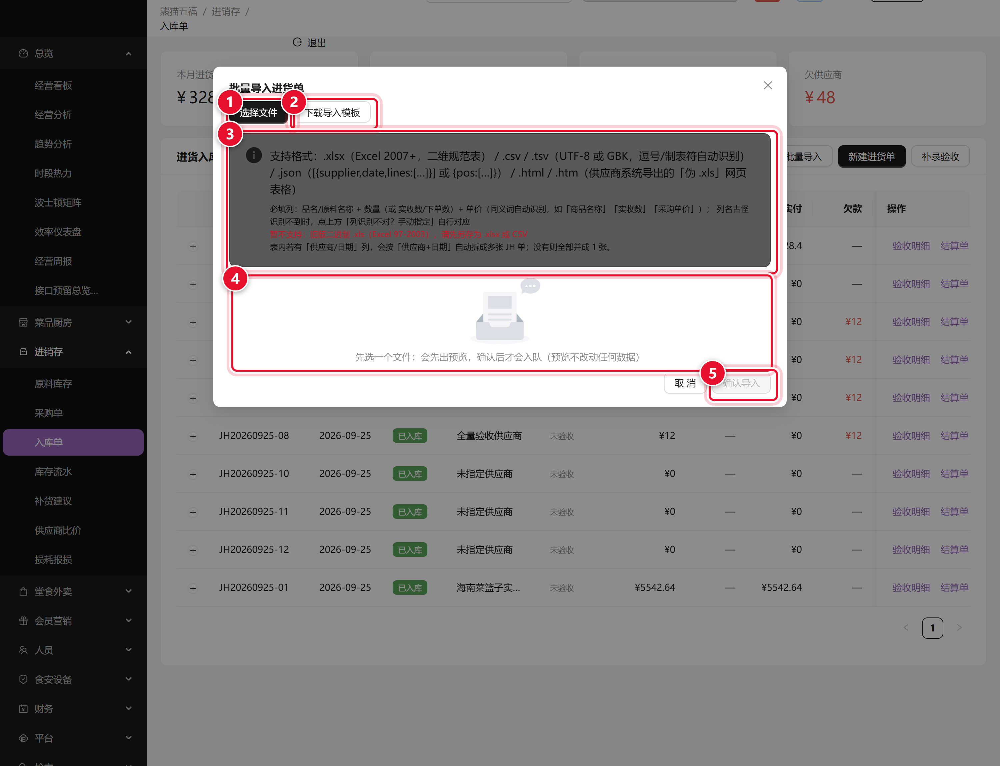
弹窗打开时什么都还没动，可以放心反复开关
- 1 点蓝色「选择文件」，去电脑里挑文件（下一步）。
- 2 「下载导入模板」：不知道文件该长什么样时，先点它下载一个空表格照着填。
- 3 这段浅蓝色说明是「支持什么文件、必须有哪些列」，不用背，出问题时回来看。
- 4 中部灰字：还没选文件，所以这里空着。
- 5 右下角「确认导入」现在是灰的——没预览过不能提交，这是防误操作。
你会看到：一个白框，标题写「批量导入进货单」。
卡住了？想退出：点右下「取消」或按 Esc，什么都没变。
第 5 步
选文件 → 看预览（最关键的一步）
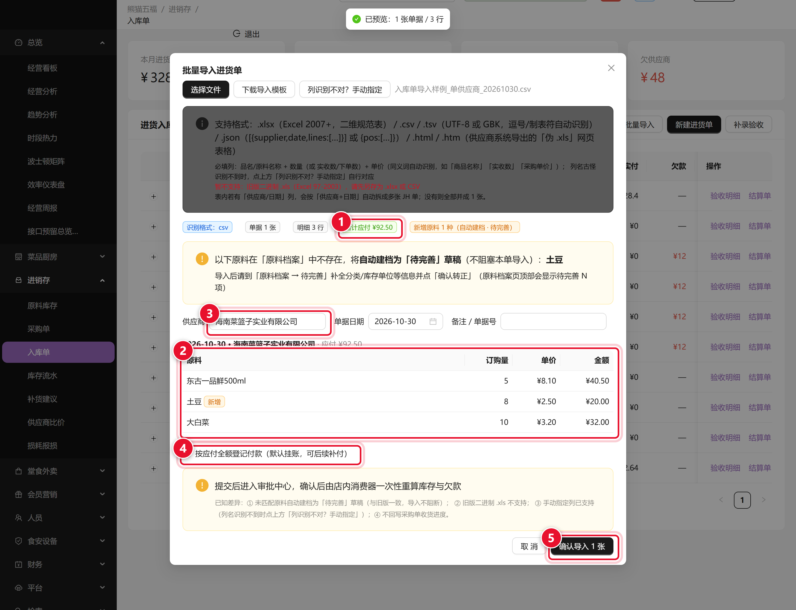
选完文件 1~3 秒后，弹窗里出现这样的预览；此刻数据还没进系统
- 1 先核对这一行彩色标签：「单据 1 张」「明细 3 行」「合计应付 ¥92.50」——金额对不上就别往下点。
- 2 明细表：逐行核对原料、数量、单价、金额。带橙色「新增」标签的，是系统里还没有的原料，会自动建一条「待完善」草稿，不影响导入。
- 3 只有 1 张单据时，这里可以改「供应商」「单据日期」「备注」；显示「未指定供应商」就手动填上。
- 4 这个勾选框保持不勾：不勾＝这单还欠着钱（等下就是要打结算单去付款）；勾了系统会记成「已付清」。
- 5 核对无误，点右下角「确认导入 1 张」。
你会看到：选文件后右上角绿色「已预览：1 张单据 / 3 行」。
卡住了？金额不对：点「取消」，回 Excel 检查单价列有没有多余文字、数量是不是数字，另存后重来。
列名太怪认不出来（比如写「货名、件数」）：弹窗会自动展开「手动指定列」面板，做法见本文最后的「其他 ③ / ④」。
第 6 步
点「确认导入 1 张」
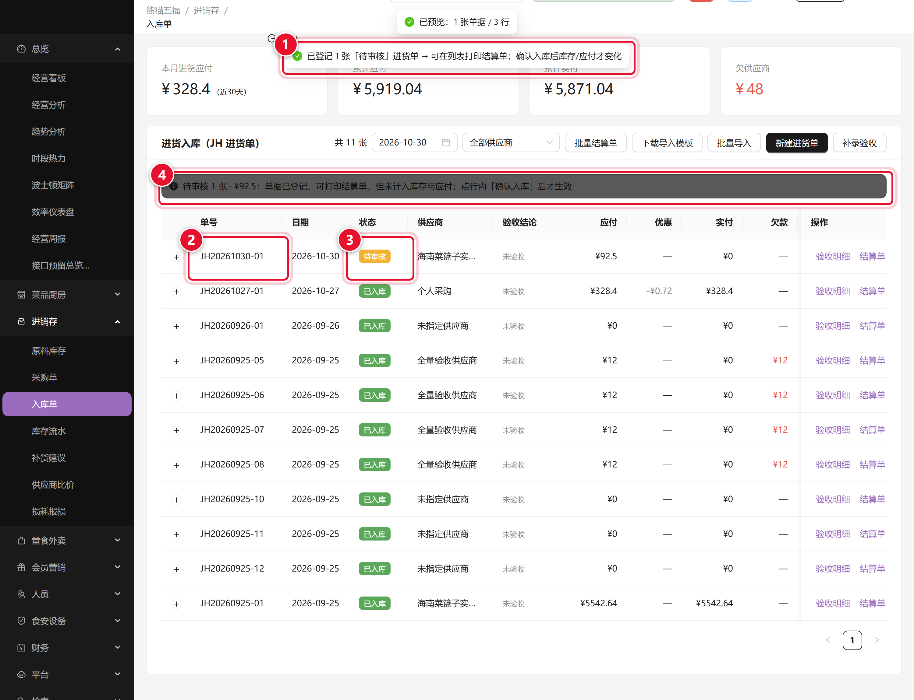
单据已经进系统，状态是黄色的「待审核」——此时能打结算单，但账还没记
- 1 屏幕上方绿色提示：「已登记 1 张「待审核」进货单 → 可在列表打印结算单；确认入库后库存/应付才变化」。3 秒后消失，没看到也不要紧。
- 2 表格最上面多了一行，单号是 JH + 日期 + -01（如 JH20261030-01）。
- 3 状态列是黄色「待审核」——说明单据已登记，但库存和欠款还没动。
- 4 蓝色提示条也在提醒你这件事，并告诉你下一步点哪里。
注意：这时顶部「累计应付」不会增加。这是故意的，不是导入失败——待审核的单据不计入应付，防止没核对的金额先跑进账里。
卡住了？列表里没有新单：按 F5 刷新；供应商筛选选了别家就切回「全部供应商」。提示变成橙色「确认未通过」：去左边「平台 → 审批中心」看驳回原因。
第 7 步
点「确认入库」（货已经到了就点）
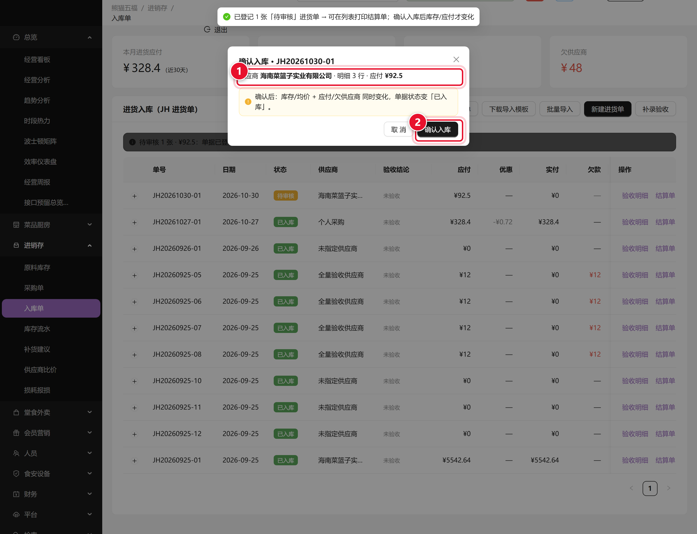
这一步让库存和欠款真正记上账
- 1 核对弹窗里的三个信息：供应商、明细行数、应付金额。本教程示例是「海南菜篮子实业有限公司 · 明细 3 行 · 应付 ¥92.5」。
- 2 点右下角「确认入库」。
你会看到：绿色「已确认入库：库存与应付已更新」，那一行状态变成绿色的「已入库」。
为什么必须做这步？不做也能打结算单，但纸上会多一行红字「本单为待审核凭证…尚未计入系统应付」，财务看了会犹豫。货确实到了，就该点这一下。
找不到「确认入库」按钮：它在「操作」列里，按钮多的时候要往右拖——把鼠标放到表格上，滚轮按住 Shift 向下滚，或拖表格底部的横向滚动条。
第 8 步
认一下导入后的那一行
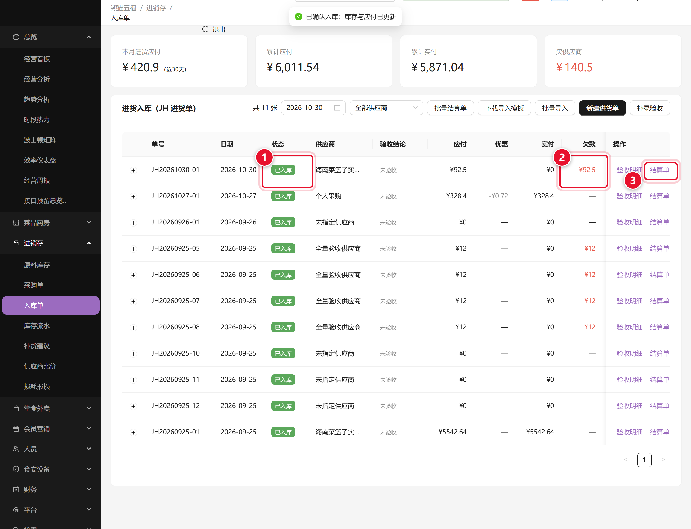
三个地方确认这次导入成功
- 1 状态：绿色「已入库」——账已记上。
- 2 欠款：红色 ¥92.5——这单还没付钱。同时顶部「累计应付」「欠供应商」各增加 92.5。
- 3 「操作」列里的「结算单」——下一步点它。
你会看到：顶部卡片数字变动，说明库存和欠款已经生效。
卡住了？如果欠款显示「—」：说明第 5 步把「登记付款」勾上了，系统认为已付清。金额错了就点行内「作废」重来。
第 9 步
点「结算单」，核对三个数
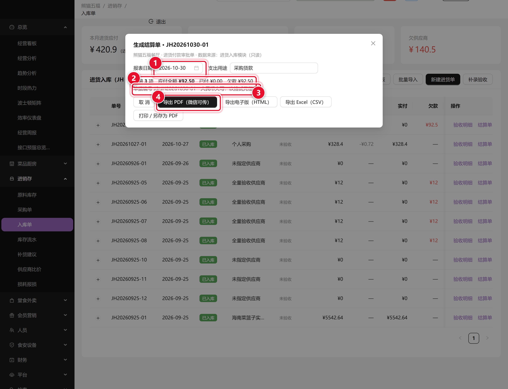
结算单是「只读输出」：打开、关闭、导出都不会改动任何数据，可以反复点
- 1 报表日期（默认今天）、支出用途（默认「采购货款」）——需要就改，不改直接导出也行。
- 2 核对：明细 3 项 应付全额 ¥92.50 已付 ¥0.00 欠款 ¥92.50。
- 3 核对单据编号（JS- 开头）和人民币大写「玖拾贰元伍角」——大写和数字必须对得上。
- 4 点「导出 PDF（微信可传）」。
你会看到：按钮转圈 1~3 秒（在生成图片，不是卡死），然后上方提示「已导出 PDF：结算单_JS-JH20261030-01_2026-10-30.pdf（可直接发微信）」。
卡住了？转圈超过 10 秒：等，别连点（连点会导出好几份）。提示「生成 PDF 失败」：改用同一个弹窗里的「打印 / 另存为 PDF」或「导出电子版（HTML）」。
第 10 步
导出 PDF，发给老板
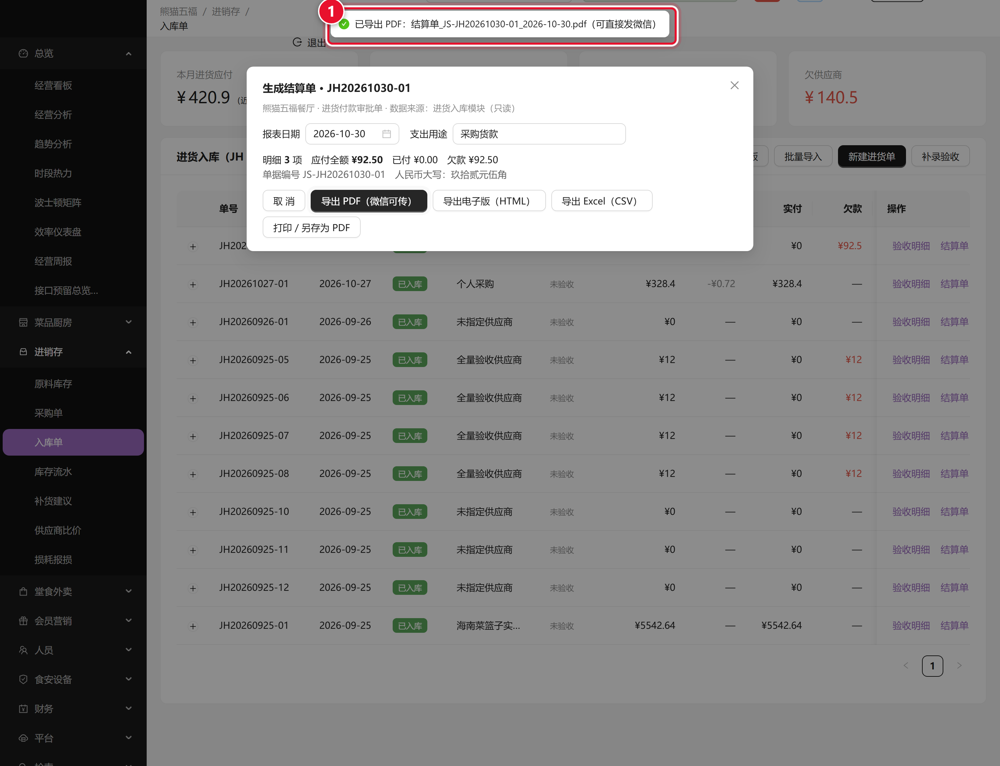
绿框里就是生成好的文件名
- 1 记下提示里的文件名，例如
结算单_JS-JH20261030-01_2026-10-30.pdf。
文件存到「下载」文件夹。打开方法：按 Win + E，点左边「下载」，按「修改日期」排序，最上面那个就是。
此电脑 › 下载
结算单_JS-JH20261030-01_2026-10-30.pdf
刚刚
312 KB
结算单_JH20261030-01.csv
刚刚
2 KB
怎么看/怎么发：双击 PDF 就能看（没装阅读器时右键 →「打开方式」→ 选浏览器）。发微信：把它拖进聊天窗口，或点「+」→ 文件 → 选它。
小提示：PDF 是图片式排版，清晰但不能选中复制（中文才不会乱）。要能编辑的内容用「导出 Excel（CSV）」。
成品
打出来的结算单长这样
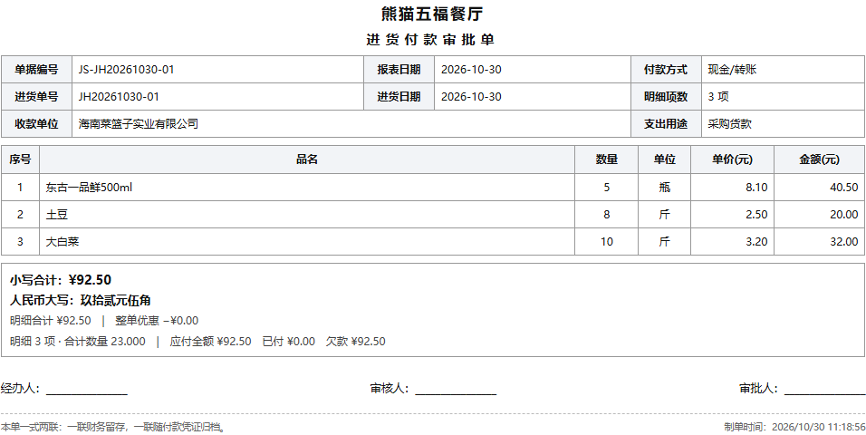
示例单：3 行明细、小写合计 ¥92.50、大写「玖拾贰元伍角」、三个签字栏
| 抬头 | 餐厅名 +「进货付款审批单」（可在「平台 → 系统配置 → 结算单模板」里改） |
| 单据编号 | JS- + 进货单号，例 JS-JH20261030-01 |
| 金额 | 小写合计 / 人民币大写 = 应付全额；另附已付、欠款供参考 |
| 签字栏 | 经办人 / 审核人 / 审批人（模板里可改） |
| 页脚 | 「本单一式两联…」+ 制单时间 |
关系记一句就够：一张进货单 → 一张结算单。不做「多张合并成一张」，要批量就一批出多页。
其他 ①
一次给多张单据出结算单
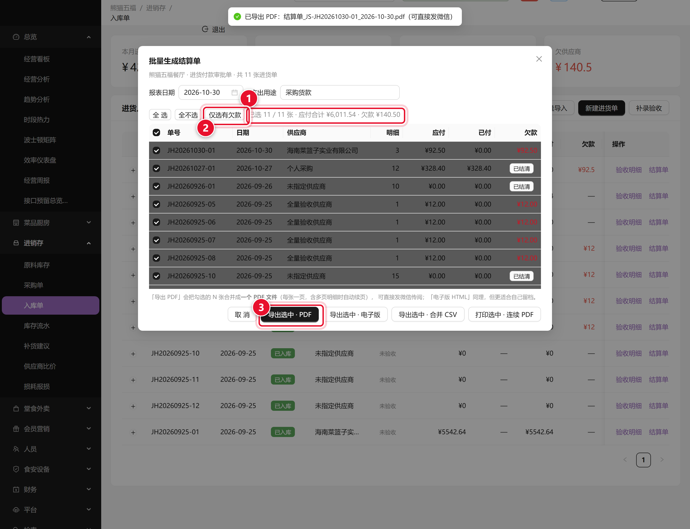
页面右上角「批量结算单」：勾选多张 → 导出选中 · PDF（每张一页，合成一个文件）
- 1 「已选 N / M 张 · 应付合计 · 欠款」：先看合计对不对（默认全部勾选）。
- 2 「仅选有欠款」：一键只勾还没结清的单，省得一张张点。
- 3 「导出选中 · PDF」：生成一个文件，每张一页，页脚印「第 n/N 张」。
要记住：这是「N 张单打包成一个文件」，不是把多张合并成一张单，每张单的金额各自独立。
其他 ②
报错「暂不支持旧版二进制 .xls」
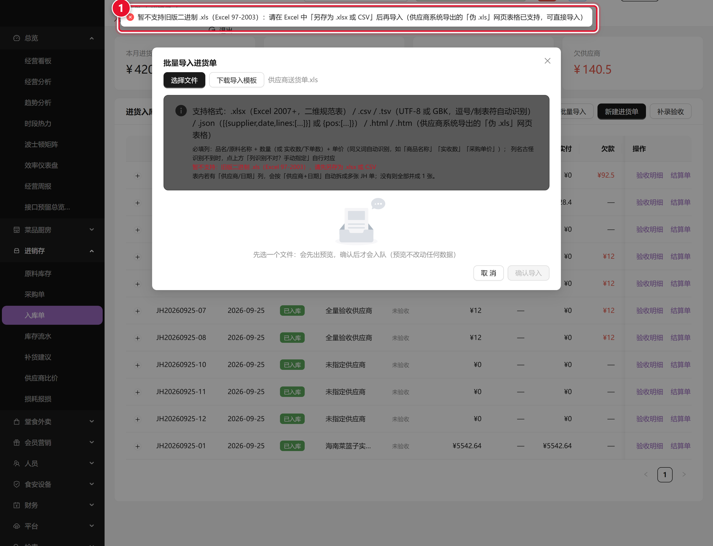
年份很早的 .xls 文件不支持，系统会明确告诉你怎么办（红色提示条）
三步解决：
- 1 用 Excel 打开这个文件 → 左上角「文件」→「另存为」。
- 2 「保存类型」选 Excel 工作簿 (*.xlsx)（或「CSV UTF-8(逗号分隔)(*.csv)」）。
- 3 保存后回到系统，重新点「批量导入」选新文件。
别急着改文件：如果这个 .xls 其实是供应商系统「导出 Excel」生成的网页文件（用记事本打开第一行是 <html>），系统可以直接导入，不用另存。
其他 ③
报错「未识别到进货单表头」
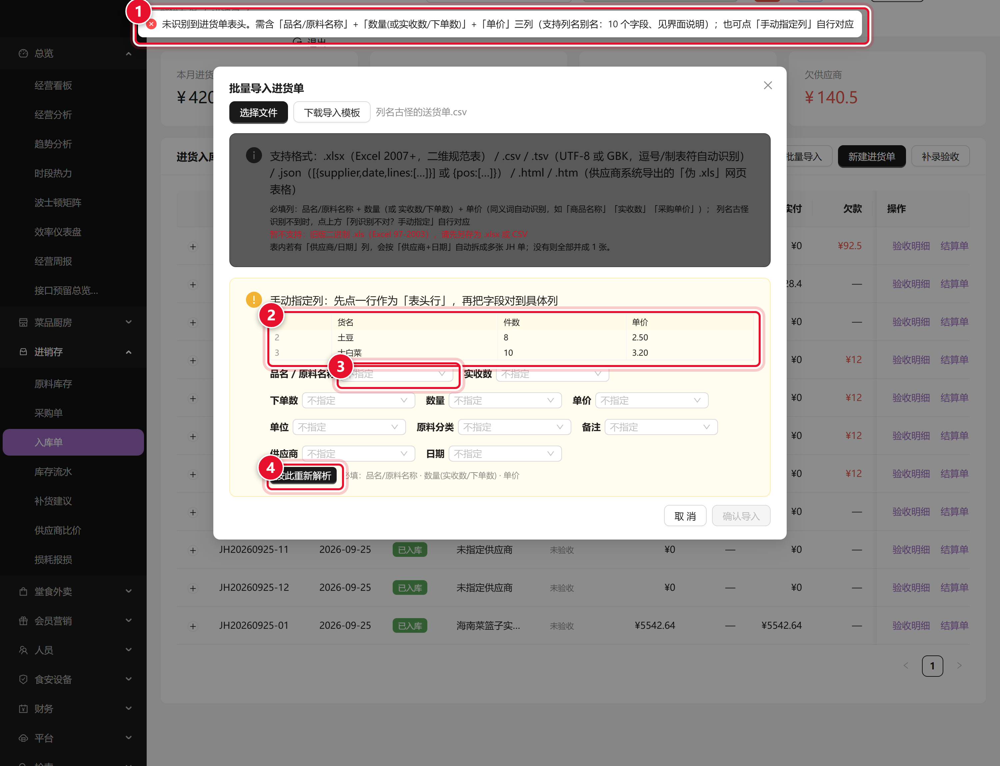
列名太怪（例如「货名 / 件数」）时，系统把原始表格整个摊在弹窗里，让你自己指
- 1 红色提示条说明「没认出表头」，并告诉你可以自己指。
- 2 在原始表格里点一行当「表头行」——通常是写着「货名 / 件数 / 单价」的那一行，点了它会变底色。
- 3 往下的下拉框（下一张图）就是用来把字段对到列的。
先别慌：这只说明列名不是常见的写法，数据本身没坏，手动指一次就好。
其他 ④
把「品名 / 数量 / 单价」指到具体的列
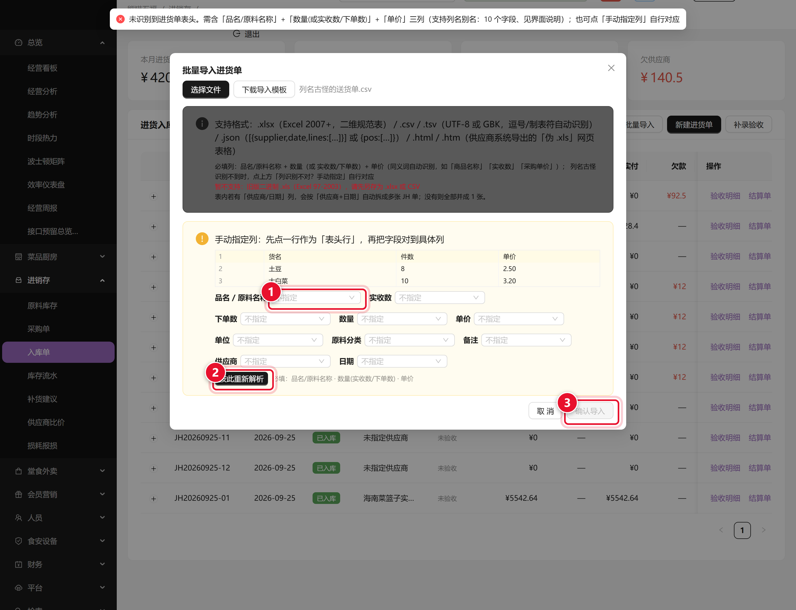
这个面板在弹窗下半部分，往下滚一点就能看到
- 1 「品名 / 原料名称」「数量」「单价」三个下拉框，各选一列对应上；其余字段留「不指定」即可。
- 2 点「按此重新解析」，等它重新读一遍。
- 3 出现正常预览后，「确认导入」按钮才会变蓝可用。
更省事的办法：不要跟古怪的表格较劲——点「下载导入模板」，把数据复制进模板（列名标准），另存为 CSV 再导入。绝大多数导入问题，都是列名对不上。
排查
新手最容易卡住的 9 件事
| 看到的现象 | 怎么办（按顺序试） |
|---|
| 找不到「最小化」 | 看屏幕最右上角，三个图标里最左边那个「—」；窗口最大化时不在标题文字旁边 |
| 找不到「批量导入」 | 左侧「进销存 → 入库单」；窗口窄时按钮会折成两行，往右看；灰色点不动＝账号不对或后台没连上 |
| 找不到「结算单」按钮 | 在表格最右「操作」列，窗口窄时被挡在可视区外：拖表格底部横向滚动条，或 Ctrl+滚轮缩小页面 |
| 弹窗被关掉了，白做 | 重新点「批量导入」再来一次；已经导入成功的单据不会消失 |
| 导入后「累计应付」没变 | 正常：单据是「待审核」，点行内「确认入库」后才计入 |
| 结算单上多了一行红字 | 说明单据还是「待审核」，先「确认入库」再打 |
| 提示导出成功但找不到文件 | Win+E → 左侧「下载」→ 按修改日期排序 |
| PDF 里字不能选中 | 设计如此（图片式排版，保证中文字体不乱）；要编辑用「导出 Excel（CSV）」 |
| 同一个文件导了两次，多出一张单 | 系统不去重。多出来的那张点行内「作废」→「确认作废」，原单保留可查 |
一条通用自救规则：任何弹窗都能按 Esc 关掉；页面乱了按 F5 刷新；
还不正常就把程序窗口关掉（×）重新双击图标——已经保存的数据都在，不会因为关程序丢失。
核对
做完对照这张清单
全部打勾，就说明这条链路你已经完整走通了。
- ☐ 登录成功，能在左侧找到「进销存 → 入库单」
- ☐ 点「批量导入」能打开导入窗口，并成功选中文件
- ☐ 预览里的「单据张数 / 明细行数 / 合计应付」与文件一致（示例：1 张 / 3 行 / ¥92.50）
- ☐ 点「确认导入」后，列表最上面出现新单，状态黄色「待审核」
- ☐ 点「确认入库」后，状态变绿色「已入库」，欠款出现红色金额，顶部累计应付增加
- ☐ 点「结算单」后，弹窗里的应付金额、人民币大写、JS- 编号都正确
- ☐ 成功导出 PDF，并在「下载」文件夹找到它，能打开、中文不乱码
- ☐ 打印（或另存为 PDF）出来是一页 A4，有明细、合计、大写、三个签字栏
常见但正常的现象（不用管）：
· 预览里出现「新增原料 N 种」——系统里没这个原料，自动建了草稿，去「原料档案 → 待完善」补分类/单位再「确认转正」即可；
· 顶部「累计实付」不变——这单还没付钱；
· 导出的 PDF 打不开——电脑缺阅读器，右键选浏览器打开。
教程版本：2026-10-30 ｜ 对应页面：管理后台 › 进销存 › 入库单 ｜ 示例数据为演示数据，实际以门店数据为准。